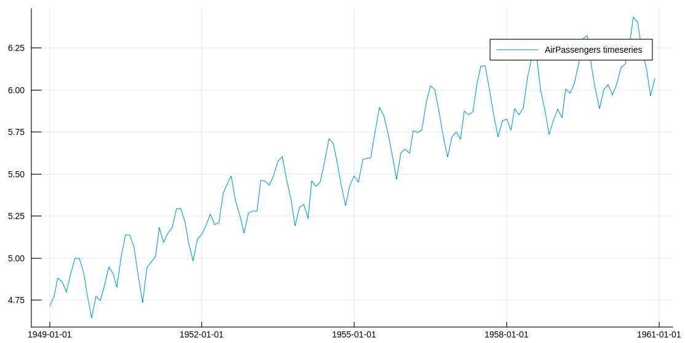

Manual
Estimation
The model estimation is made using the function statespace(y, s; X, nseeds). It receives as argument the timeseries and the desired seasonality s.
The user can input explanatory variables in an Array{Float64, 2} variable X and specify the desired number of seeds to perform the estimation nseeds.
ss = statespace(y, s; X = X, nseeds = nseeds)Simulation
Simulation is made using the function simulate. It receives as argument a StateSpace object, the number of steps ahead N and the number of scenarios to simulate S.
simulation = simulate(ss, N, S)Example
Letś take the Air Passenger time series to build and example. Taking the log of the series we should have a nice timeseries to simulate. The code is in the example folder.
using CSV, StateSpaceModels, Plots, Statistics, Dates
#load the AirPassengers dataset
AP = CSV.read("AirPassengers.csv")
#Take the log of the series
logAP = log.(Array{Float64}(AP[:Passengers]))
p1 = plot(AP[:Date], logAP, label = "AirPassengers timeseries", size = (1000, 500))
Estimating a StateSpaceModel should give us the trend and seasonal components of the time series
#Define its seasonality
s = 12
#Estimate a StateSpace Structure
ss = statespace(logAP, s)
#Analyze its decomposition in seasonal and trend
p2 = plot(AP[:Date], ss.state.seasonal, label = "AirPassengers seasonal", size = (1000, 500))
p3 = plot(AP[:Date], ss.state.trend, label = "AirPassengers trend", size = (1000, 500))

We can also simulate the future of this time series. ?In this example we simulate 100 scenarios of 60 steps ahead.
#Simulate 100 scenarios, 20 steps ahead
num_scenarios = 100
num_steps_ahead = 60
simulation = simulate(ss, num_steps_ahead, num_scenarios)
#Define simulation dates
firstdate = AP[:Date][end] + Month(1)
newdates = collect(firstdate:Month(1):firstdate + Month(num_steps_ahead - 1))
#Evaluating the mean of the forecast and its quantiles
simulation_mean = mean(simulation, dims = 3)[1, :, :]
n = length(logAP)
nmonths = length(simulation[1, :, 1])
simulation_q05 = zeros(nmonths)
simulation_q95 = zeros(nmonths)
for t = 1:nmonths
simulation_q05[t] = quantile(simulation[1, t, :], 0.05)
simulation_q95[t] = quantile(simulation[1, t, :], 0.95)
end
plot!(p1, newdates, [simulation_q05, simulation_mean, simulation_q95], labels = ["5% quantile", "mean", "95% quantile"])